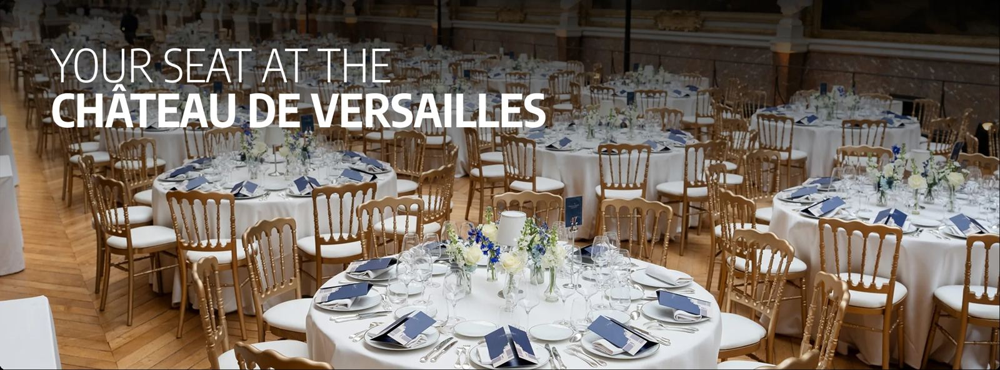

Conferences · Crypto / Web3
Signal Week 2027 (formerly Paris Blockchain Week)
- Dates
- –
- Venue
- Palais des Congrès de Paris, 2 Place de la Porte Maillot, 75017 Paris (main event); official site also mentions Château de Versailles
- Location
- Paris, France
- Format
- In-person
- Category
- Crypto / Web3
- Industry
- Crypto
- Organiser
- Signal Week (formerly Paris Blockchain Week)
- Price
- Pro, Summit Access: €799 (official JSON-LD offer, priceValidUntil 2026-11-25). Check the official ticket page for the current wave after that date.
- Official website
- https://www.signalweek.com/
- Tickets
- https://www.signalweek.com/tickets
About
Dates are local to the host city (Central European Time, UTC+1 / UTC+2 in summer).
Topics: digital assets, institutional crypto, blockchain.
Official Signal Week / former Paris Blockchain Week pages (fetched 24 Nov 2026) stated “10,000+ Attendees” / “10K+ Attendees from 100+ countries.” Stored as 10,000 (organiser minimum). Paris Blockchain Week has been renamed Signal Week; this reused slug is that event.